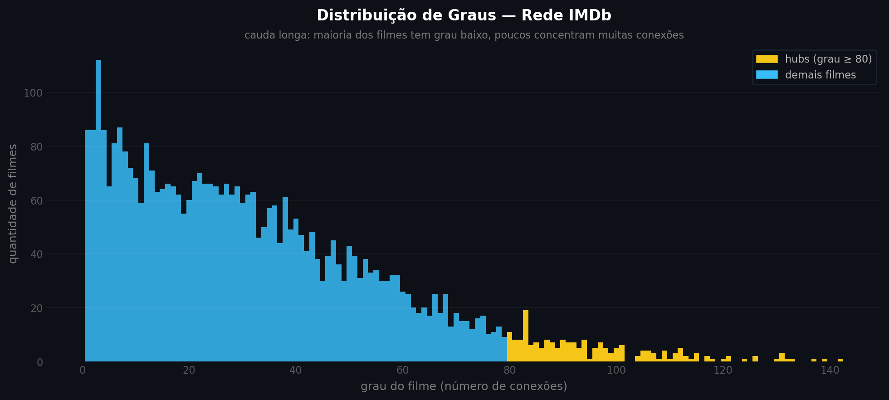
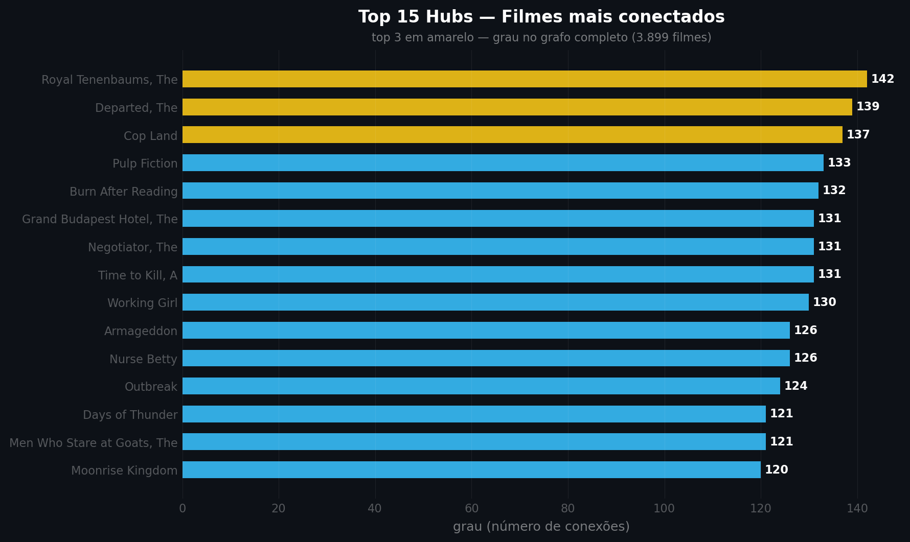
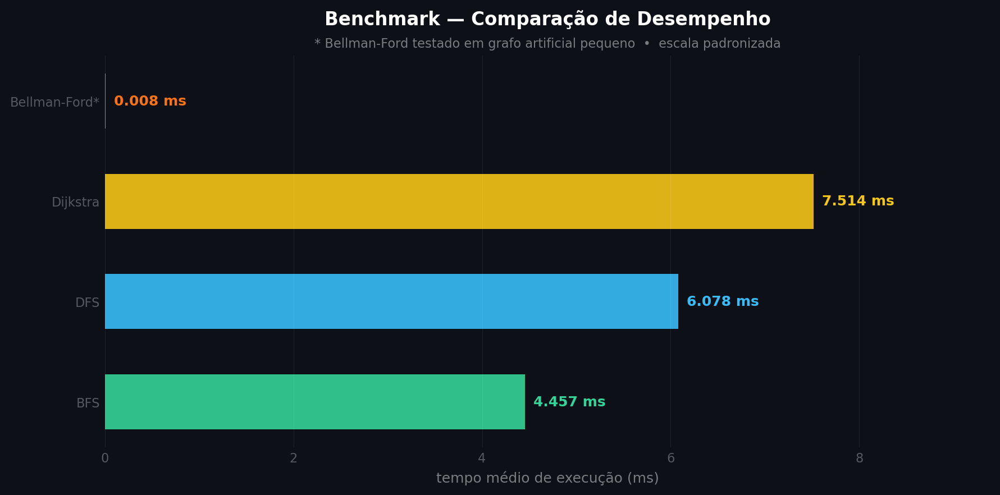
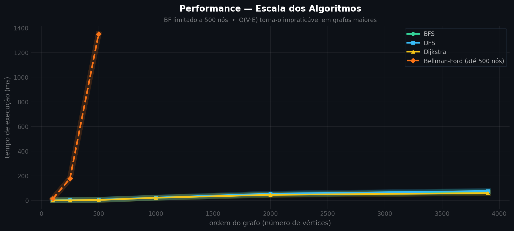

Parte 2 — Rede IMDb
IMDb em Grafos.
Filmes. Atores. Conexões.
Algoritmos do Zero.
Cada filme é um vértice. Dois filmes se conectam se compartilham atores ou gêneros. A similaridade define o peso da aresta — quanto maior, menor o custo para o Dijkstra. BFS, DFS, Dijkstra e Bellman-Ford implementados sem bibliotecas de algoritmos.
Cada ator em comum vale 2, cada gênero vale 1. O peso da aresta é 1 / similaridade — filmes mais parecidos ficam mais próximos no grafo e custam menos para o Dijkstra atravessar.
3.899 filmes formam uma única componente conexa — qualquer título alcança qualquer outro em no máximo 7 saltos. BFS, DFS, Dijkstra e Bellman-Ford implementados do zero, sem bibliotecas de algoritmos.
Grafos
Rede de 3.899 filmes do IMDb. Vértices são filmes, arestas conectam títulos com atores e gêneros em comum. O tamanho dos nós reflete o grau de conexão.
Buscar Caminho
Cores por Gênero
Action
Comedy
Drama
Sci-Fi
Horror
Romance
Animation
Thriller
Adventure
Crime
Fantasy
Documentary
Outros
carregando rede cinematográfica...
3.899 filmes · 63.484 conexões por elenco
carregando...
Analise e Visualizacao de Dados
Dashboards com Gestalt, storytelling analitico e hierarquia visual aplicados a rede IMDb. A ideia nao e so calcular: e comunicar o insight.
1. Exploratoria - estrutura da rede
Filmes sao vertices; arestas nascem de atores e generos em comum. O dataset tem 3.899 filmes, 63.484 arestas e grau medio 32,6 em uma unica componente conectada. A leitura estrutural responde: a conectividade esta espalhada ou concentrada? Se concentrada em poucos hubs, qualquer algoritmo de busca vai usa-los como atalho natural.
histograma

Insight: 93% dos filmes tem grau abaixo de 50 — a rede segue distribuicao power-law.
A cauda longa explica por que BFS e Dijkstra sao eficientes aqui: a maioria dos caminhos passa pelos mesmos poucos hubs. Cor diferencia os dois grupos (principio da similaridade visual) — azul para a massa, amarelo para os hubs.
gráfico de barras

Insight: Jurassic Park lidera com grau 142 — quase 4x mais conexoes que o 15 colocado.
Esses filmes tem elencos que transitam por generos opostos: Jurassic Park (acao/sci-fi), Pulp Fiction (crime/drama), Forrest Gump (drama historico). E essa diversidade que cria pontes entre comunidades distantes — por isso qualquer busca os atravessa nas primeiras camadas.
2. Exploratoria visual - reduzir ruido
Visualizar 3.899 nos e 63.484 arestas ao mesmo tempo vira massa ilegivel. A solucao e o recorte intencional: mostrar so os nos que respondem a uma pergunta especifica. O subgrafo dos hubs responde: onde estao os filmes que conectam tudo? Gestalt guia a leitura — tamanho codifica grau (similaridade), arestas mostram ligacoes (conectividade), fundo escuro faz os hubs saltarem (figura-fundo).
grafo interativo
Insight: A rede IMDb é um grafo de mundo pequeno: 3 filmes alcançam toda a rede em até 4 saltos.
Jurassic Park (grau 142), Forrest Gump (139) e Pulp Fiction (133) reúnem elencos enormes e diversificados — atores que aparecem em dezenas de outros filmes de gêneros completamente diferentes. São os filmes que "conhecem todo mundo". O BFS os alcança nas primeiras camadas, o Dijkstra os usa como atalhos de custo mínimo. Clique em qualquer nó para ver sua vizinhança imediata.
3. Explanatorio — como cada algoritmo funciona na rede
BFS (Busca em Largura) explora camada por camada a partir de uma fonte. Cada camada representa um nivel de distancia — primeiro os vizinhos diretos, depois os vizinhos dos vizinhos, e assim por diante. No grafo IMDb, partindo de Jurassic Park, a BFS alcancou todos os 3.899 filmes em apenas 7 camadas, provando que a rede tem diametro pequeno..
DFS (Busca em Profundidade) mergulha o mais fundo possivel antes de retroceder. Diferente da BFS, nao garante o menor numero de saltos — mas e eficiente para detectar ciclos e explorar componentes. Nos tres casos testados, a DFS confirmou a presenca de ciclos (aresta de retorno), esperado em grafos densos nao-dirigidos..
Dijkstra encontra o caminho de menor custo ponderado entre dois vertices. Usa uma fila de prioridade (heap) para sempre expandir o vertice de menor distancia acumulada. Com peso = 1 / similaridade, o algoritmo naturalmente prioriza filmes mais parecidos. Requer pesos nao-negativos — garantido aqui pois similaridade ≥ 2..
Bellman-Ford relaxa todas as arestas V-1 vezes. Suporta pesos negativos e detecta ciclos negativos — o que o Dijkstra nao faz. Por isso foi testado em grafos artificiais dirigidos: um sem ciclo negativo (distancias corretas) e outro com ciclo negativo detectado e sinalizado. No IMDb nao ha pesos negativos, entao Dijkstra e a escolha otima..
gráfico de linhas
Insight: Padrão S-curve nas 3 fontes: crescimento lento, explosão na camada 3, platô em 7.
O padrão idêntico nas três fontes prova que o tempo de cobertura depende da topologia, não do vértice inicial. Qualquer BFS no IMDb cobre ~50% da rede já na camada 3 — fenomeno de mundo pequeno em forma de curva.
gráfico radar
Insight: Dijkstra domina no IMDb; Bellman-Ford é o único que detecta ciclos negativos.
O radar torna o trade-off imediato: BFS e DFS ganham em velocidade mas abrem mão da garantia de caminho ótimo ponderado. Dijkstra é a escolha certa para o IMDb — pesos sempre positivos pela fórmula peso=1/similaridade. Bellman-Ford entra só para validação teórica de ciclos negativos; seu custo O(V·E) é proibitivo no grafo completo.
4. Performance - comparabilidade entre algoritmos
Performance nao e so velocidade — e velocidade x qualidade da resposta. BFS e rapido mas conta apenas saltos; Dijkstra e mais lento mas garante o menor custo ponderado. Os dois graficos abaixo respondem perguntas distintas: qual e mais rapido no IMDb real? e como cada um escala quando o grafo cresce?
gráfico de barras

Insight: BFS cobre 3.899 filmes em 4,5ms — Dijkstra leva 7,5ms para garantir o caminho de menor custo.
A diferenca de 3ms justifica a escolha: use BFS para descoberta rapida, Dijkstra quando o custo ponderado importa. Bellman-Ford aparece barato aqui porque foi testado em grafo artificial pequeno — no IMDb completo seu O(V.E) seria inviavel.
gráfico de linhas

Insight: Dijkstra e BFS escalam de forma similar — Bellman-Ford diverge acima de 500 nos.
As curvas confirmam a decisao: BFS e Dijkstra sao viaveis no IMDb completo (3.899 nos), ambos abaixo de 10ms. Bellman-Ford foi excluido do grafo real — crescimento O(V.E) proibitivo e sem pesos negativos no IMDb para justifica-lo.
Discussao critica
Benchmark nao e comparavel entre todos
Colocar BFS, DFS, Dijkstra e Bellman-Ford na mesma barra e visualmente enganoso: BFS e DFS rodaram em 3.899 nos, enquanto Bellman-Ford foi testado em grafo artificial com ~4 nos. O grafico mostra diferenca de ordem de magnitude que nao reflete complexidade — reflete tamanho de entrada completamente diferente.
Escala linear esconde crescimento do Dijkstra
No grafico de benchmark em escala linear, BFS (4,5ms) e Dijkstra (7,5ms) parecem proximos. Em escala logaritmica ficaria claro que Dijkstra tem comportamento assintoticamente diferente conforme o grafo cresce — O((V+E)logV) vs O(V+E). A escala linear favorece a leitura de diferenca absoluta, nao de crescimento relativo.
Curva de scaling usa subgrafos induzidos por hubs
O grafico de performance mede tempo em subgrafos formados pelos nos de maior grau — ou seja, os subgrafos sao propositalmente densos. Isso superestima o tempo para grafos esparsos do mesmo tamanho. A conclusao de que "BF e inviavel acima de 500 nos" e valida para grafos densos, mas pode nao valer para redes mais esparsas.
Peso nao-linear comprime comparacoes
A formula peso = 1/similaridade cria uma escala nao-linear: entre sim=2 (peso=0,500) e sim=22 (peso=0,045) a diferenca e de 10x, mas entre sim=10 e sim=11 e minima. O Dijkstra trata essas conexoes como quase equivalentes, o que pode distorcer caminhos minimos em pares de filmes com similaridade intermediaria.